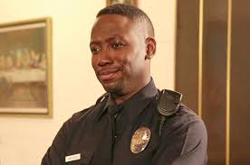
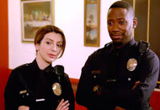

| Winston is a socially awkward individual who comes into the show later on. He returns to the US from playing basketball in Latvia having zero sense of what's been going on. As he searches for a job, he frantically fails to find anything that sticks until he sought out the become a police officer. |  | |
|  | Winston is another roommate who is not smooth with the ladies, however he is the only one with a cat, Furguson. Winston has had many on and off romances, his longest one being with his partner on the force, Aly Nelson who he prosposes to in season 6. |